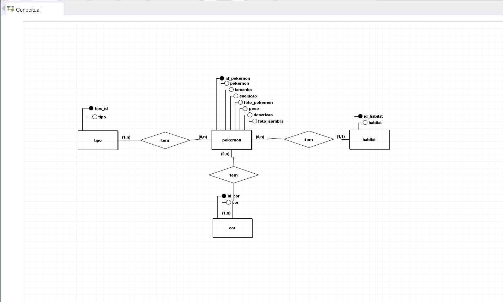
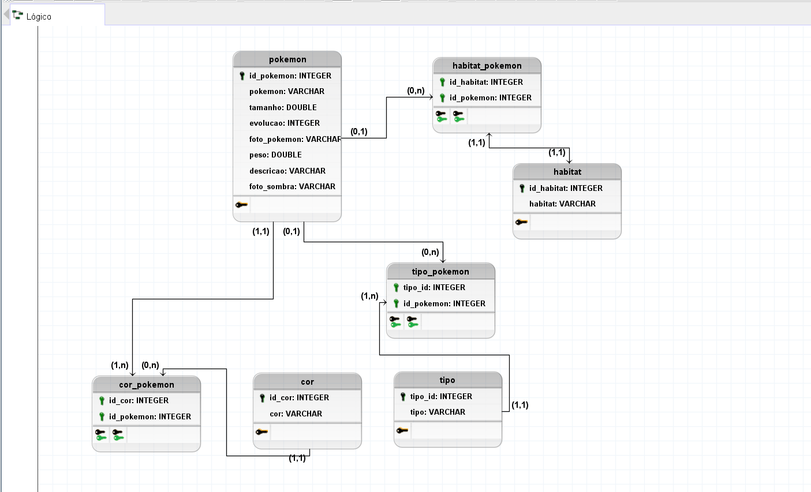

O MVP desenvolvido representa a primeira versão em protótipo do jogo “Pokéshots”, uma experiência interativa inspirada no clássico desafio “Quem é esse Pokémon?”. O objetivo principal desta versão mínima é validar a mecânica central do jogo: permitir que o usuário tente adivinhar qual é o Pokémon apresentado, recebendo uma análise visual e comparativa de seus acertos.
Ao iniciar o jogo, o usuário se depara com uma interface semelhante a uma Pokédex, composta por duas áreas principais:
Nesta área é apresentado o enigma relacionado ao Pokémon. Existem duas variações:
Em ambos os casos, o usuário deve digitar o nome do Pokémon que acredita ser. Essa é a ação central do MVP.
Após a tentativa, o sistema compara a resposta com os dados reais da Pokédex e apresenta uma tabela que avalia diferentes atributos:
Cada detalhe recebe uma marcação visual:
Assim, mesmo que o jogador não acerte o nome completo, pode observar o que se aproximou do resultado real, reforçando o caráter educativo e competitivo do jogo.
Esta primeira versão do projeto foi desenvolvida apenas em formato de protótipo visual, composta por telas que ilustram como o jogo funcionará no futuro. Ainda não contamos com elementos avançados como ranking, níveis, progressão do jogador ou todas as mecânicas completas da experiência final — e isso faz parte da proposta desta etapa inicial.
O foco do MVP é permitir que a ideia principal brilhe:
As telas apresentadas ao final desta página representam a interface prototipadas desta primeira versão do jogo e ilustram como o usuário interage com o desafio.
Abaixo estão o diagrama conceitual e o diagrama lógico do banco de dados do projeto:
 